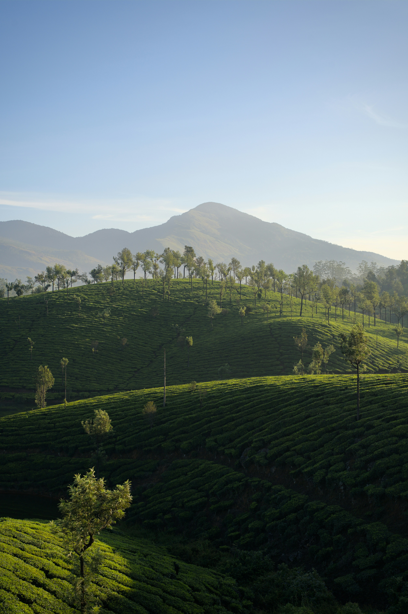

O Desafio da Sustentabilidade no Campo
O grande desafio do agronegócio moderno é atender à crescente demanda global por alimentos e matérias-primas, preservando ao mesmo tempo os recursos naturais fundamentais para a vida. Um "agro forte" não se mede apenas pelo volume da colheita, mas pela sua capacidade de se manter produtivo a longo prazo, adotando práticas que protejam o solo, a água e a biodiversidade. O equilíbrio entre produzir e conservar é a chave para o futuro do setor.
.jpg "Integração de lavoura e áreas de preservação ambiental. Fonte: Unsplash, 2025.")
Práticas Verdes: Tecnologia a Serviço da Conservação

Alcançar a sustentabilidade no campo exige a união entre os conhecimentos tradicionais de manejo e as inovações tecnológicas de ponta. Sistemas como a Integração Lavoura-Pecuária-Floresta (ILPF) e o Plantio Direto na palha são exemplos práticos de como o Brasil tem liderado a conservação ambiental no setor produtivo. Essas técnicas ajudam no sequestro de carbono, evitam a erosão do solo e otimizam o uso da água.
Além disso, o uso de bioinsumos (defensivos e fertilizantes biológicos) e o monitoramento via satélite permitem que o produtor rural identifique gargalos em tempo real, aplicando recursos de forma cirúrgica. Dessa forma, a tecnologia se torna a maior aliada da preservação, provando que a produtividade e a responsabilidade ambiental andam de mãos dadas para garantir a segurança alimentar das próximas gerações.
Referências
Embrapa. Sustentabilidade no Agronegócio Brasileiro. Acesso em 17 de maio de 2025.
OpenAI. Textos gerados adaptados sobre o tópico "Agro Forte, Futuro Sustentável". 17 de maio de 2025, https://chat.openai.com.